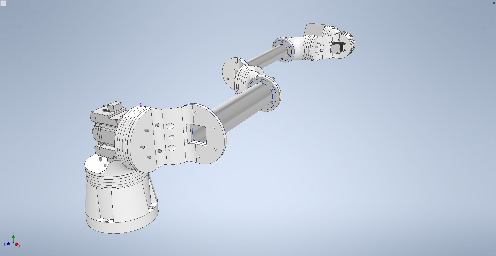
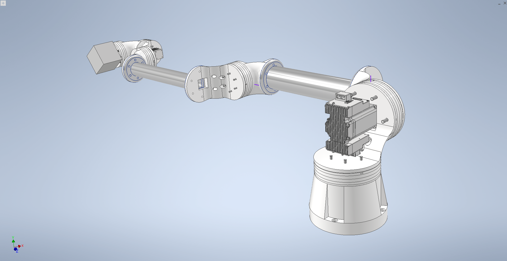
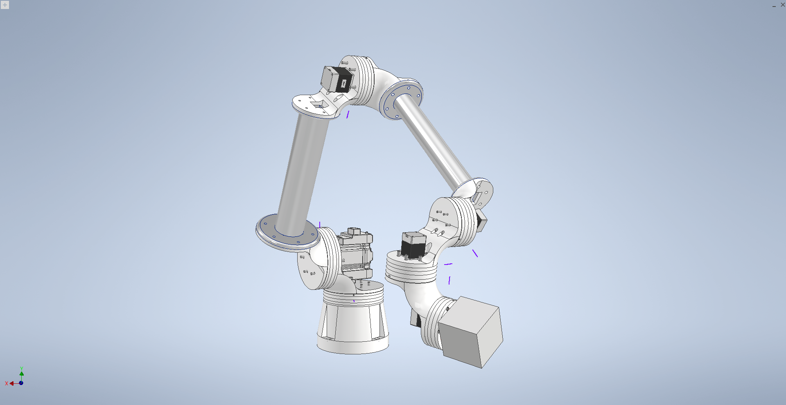

Model robota wygląda następująco:
  Model 3D został w całości zaprojektowany w programie Inventor.
Poniżej przedstawiono ruch pierwszego stopnia swobody. W robocie zastosowano przekładnię cykloidalną, ponieważ charakteryzuje się ona dużym przełożeniem. W przypadku tego robota u podstawy wynosi ono 1:55.
Przekładnia została zaprojektowana z myślą o łatwej zmianie wymiarów, przełożenia oraz innych parametrów. Wszystkie wymiary są powiązane z plikiem Excel, w którym, podając odpowiednie wartości, można przeskalować przekładnię, dostosowując ją do naszych potrzeb.